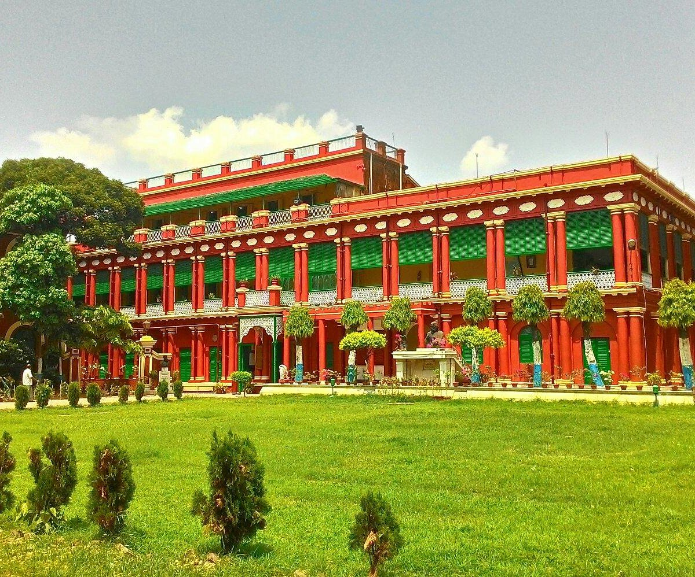

Jorasanko Thakur Bari
Address: Ganesh Talkies, 267, Rabindra Sarani, Singhi Bagan, Jorasanko,
Raja Katra, Kolkata, West Bengal 700007
Type: Architectural Buildings
Opening Timing : 10:00 am - 5 pm
Jorasanko Thakur Bari is the ancestral house of the Tagore family.
Rabindranath Tagore was born, lived & died here.